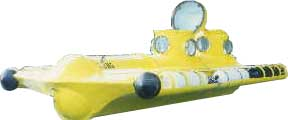

Main Page | Contact | History | Photos | Statistics | Updates |
|  |
|
Ever since I was a child I knew I was going to build submarines. I decided after reading a book in the third grade. Years of research followed, untill , at the age of 15 , I bought my first piece of steel. In between attending college, and learning much as I went along, it took eight years to complete. (If done full- time, a sub can be built in aboout a year.) I choose to make my sub a gliding sub for two important reasons. One is that by not needing a large bank of batteries to power the motors, the craft can wiegh a great deal less, making it much easier to transport, and therefore less expensive to use. Second is that by keeping it non-motorized, and being a boat only 12 feet long, it is legally the same as a canoe in the eyes of the law. This means it does not even have to be registered. The CBUG allows two people at a time to glide down to up to 700 feet deep, and stay as long as they'd like. All with no decompression. While other subs do exsist with similar capabilities, they cost thousands of dollars a day to operate, not hundreds, like the CBUG. Recentely small motors have been added to help with steering amoung the near verticle walls off Roatan. This location has proven to be heaven to operate a sub in. Once the sub has passed through the first thermo-cline, the visibility averages 300 feet and can exceed 500 feet, due to the lack of mixing with the sediment rich waters above. Needless to say this is spectacular in itself. Visualize being next to a vertical and in places, overhanging, wall of solic rock that has been dissolved into amazing shapes. This wall has many canyons, cracks, caves and other interesting features to explore. Now add to the equation animals that are unique to these depths and hardly ever seen. At least one new species has already been discovered, a variety of Big-eye fish, that lives in a single isolated colony below 400 feet. Since the C-BUG operates at the edge of the Cayman Trench (max depth >20,000 feet) it is a short trip for open water species to check out the sub. Leatherback sea turtles, hammerhead and bull sharks, schools of 1000's of tuna, and a variety of other schooling fish have all been observed from the sub. On occasion the C-BUG has dived in the night, sometimes with food attached to it to attract even more bizarre animals. Pelagic tunicates, squid, foot-long corkscrew worms, an animal that had wings like a stingray but was clear like a jellyfish and of course a variety of sharks have been seen on night dives. The C-BUG has also found and retrieved a sunken boat. A modern 27 footer, all out of fiberglass, was brought up from 365 feet. Restored, with a new engine and appropriately named "Resurrected", it now serves as a tender to the sub that salvaged her. What's next for the C-BUG? Numerous people have expressed interest in using it for treasure hunting. Many others might charter it for scientific research. |